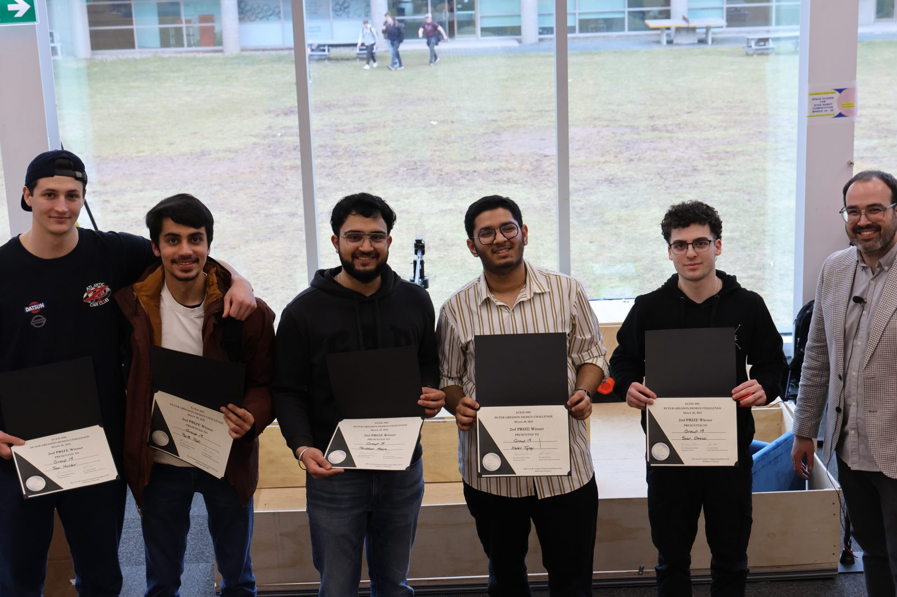

Robo Heist Challenge
Our team (Group 19) won 2nd prize in the ECED 3901 Peter Gregson Design Challenge in March 2025. The robot we built works its way through a secured arena, detects its targets and completes retrieval tasks, getting past simulated security systems along the way. The final runs were streamed live, so you can watch ours below.

What we built
- Integrated ultrasonic sensors, encoders and control algorithms for obstacle detection and precise navigation.
- Used a Raspberry Pi Pico to handle the ultrasonic sensor.
- Implemented the decision-making logic in C++ on Arduino, optimizing the strategy to complete tasks efficiently.
- Won 2nd prize in the ECED 3901 Peter Gregson Design Challenge (March 2025).
- Got past the simulated security by demonstrating vulnerabilities in RFID key duplication and exploiting the limits of laser tripwire detection.
Watch the run
 Watch our run on YouTube · starts at 6:31:08 ↗
Watch our run on YouTube · starts at 6:31:08 ↗
From the ECED 3901 Roboheist livestream (2025, part 2 of 2).
Tools & tech
ArduinoRaspberry Pi PicoC++Ultrasonic sensorsEncodersRFID